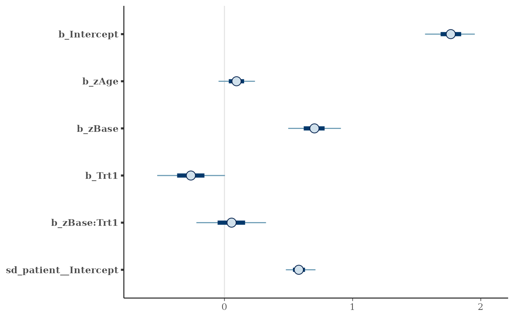
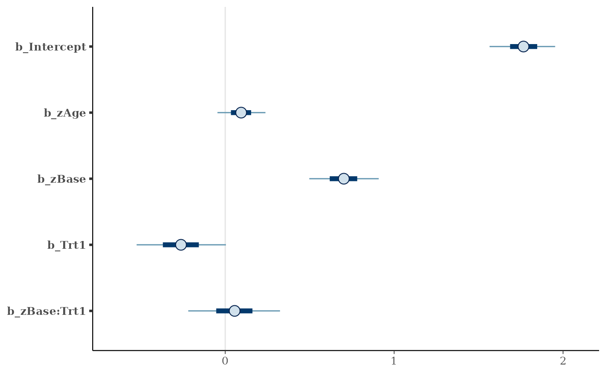
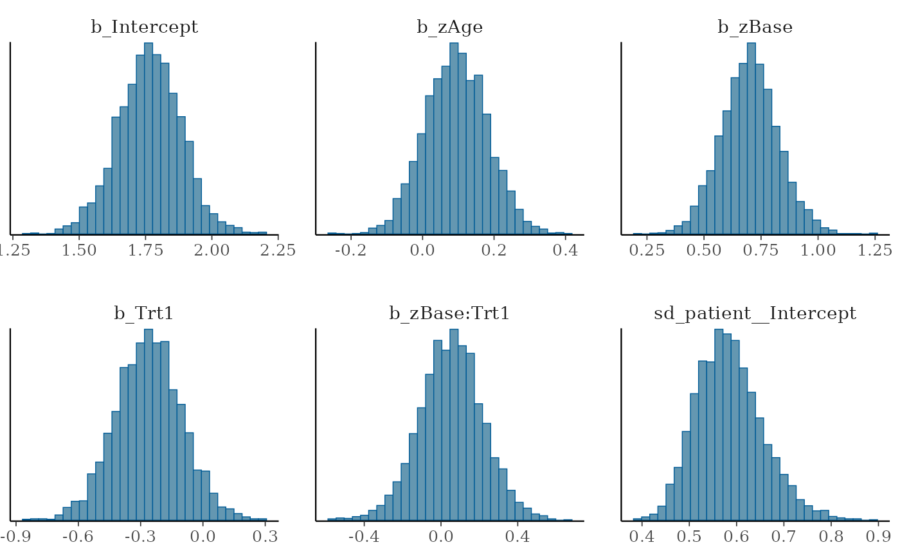
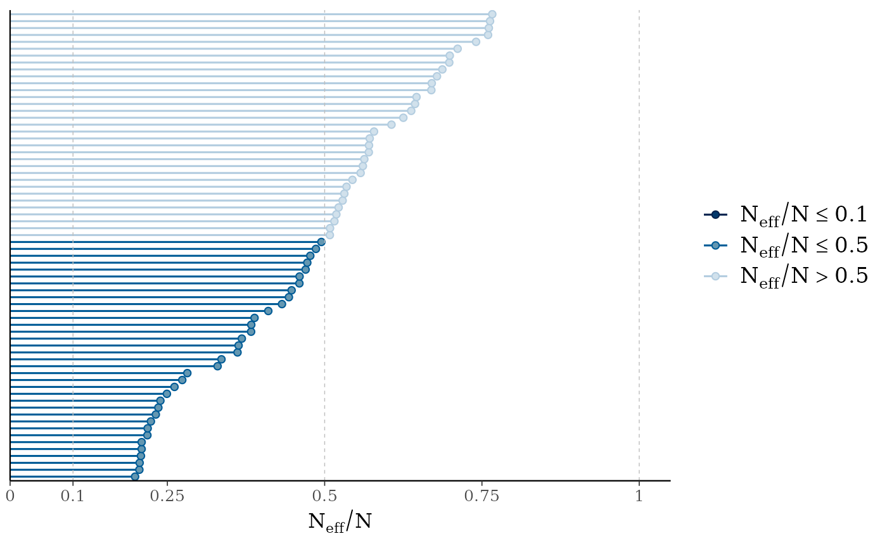
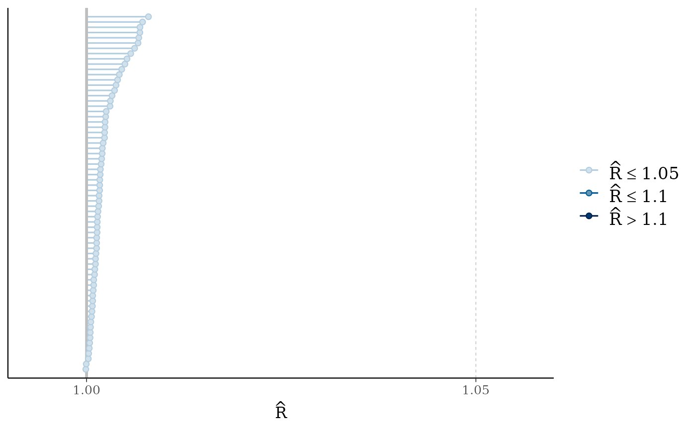
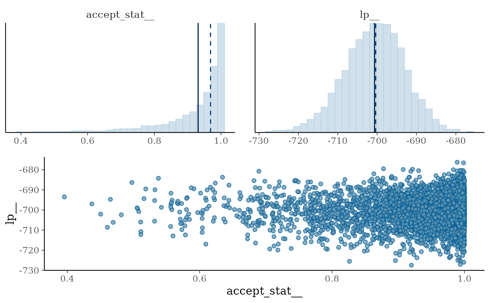
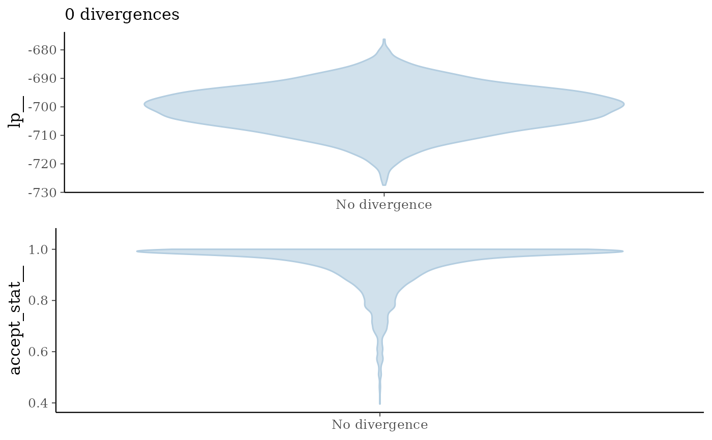

Convenient way to call MCMC plotting functions implemented in the bayesplot package.
Usage
# S3 method for class 'brmsfit'
mcmc_plot(
object,
pars = NA,
type = "intervals",
variable = NULL,
regex = FALSE,
fixed = FALSE,
...
)
mcmc_plot(object, ...)Arguments
- object
An R object typically of class
brmsfit- pars
Deprecated alias of
variable. Names of the parameters to plot, as given by a character vector or a regular expression.- type
The type of the plot. Supported types are (as names)
hist,dens,hist_by_chain,dens_overlay,violin,intervals,areas,acf,acf_bar,trace,trace_highlight,scatter,rhat,rhat_hist,neff,neff_histnuts_acceptance,nuts_divergence,nuts_stepsize,nuts_treedepth, andnuts_energy. For an overview on the various plot types seeMCMC-overview.- variable
Names of the variables (parameters) to plot, as given by a character vector or a regular expression (if
regex = TRUE). By default, a hopefully not too large selection of variables is plotted.- regex
Logical; Indicates whether
variableshould be treated as regular expressions. Defaults toFALSE.- fixed
(Deprecated) Indicates whether parameter names should be matched exactly (
TRUE) or treated as regular expressions (FALSE). Default isFALSEand only works with argumentpars.- ...
Additional arguments passed to the plotting functions. See
MCMC-overviewfor more details.
Value
A ggplot object
that can be further customized using the ggplot2 package.
Details
Also consider using the shinystan package available via
method launch_shinystan in brms for flexible
and interactive visual analysis.
Examples
# \dontrun{
model <- brm(count ~ zAge + zBase * Trt + (1|patient),
data = epilepsy, family = "poisson")
#> Compiling Stan program...
#> Start sampling
#>
#> SAMPLING FOR MODEL 'anon_model' NOW (CHAIN 1).
#> Chain 1:
#> Chain 1: Gradient evaluation took 3.7e-05 seconds
#> Chain 1: 1000 transitions using 10 leapfrog steps per transition would take 0.37 seconds.
#> Chain 1: Adjust your expectations accordingly!
#> Chain 1:
#> Chain 1:
#> Chain 1: Iteration: 1 / 2000 [ 0%] (Warmup)
#> Chain 1: Iteration: 200 / 2000 [ 10%] (Warmup)
#> Chain 1: Iteration: 400 / 2000 [ 20%] (Warmup)
#> Chain 1: Iteration: 600 / 2000 [ 30%] (Warmup)
#> Chain 1: Iteration: 800 / 2000 [ 40%] (Warmup)
#> Chain 1: Iteration: 1000 / 2000 [ 50%] (Warmup)
#> Chain 1: Iteration: 1001 / 2000 [ 50%] (Sampling)
#> Chain 1: Iteration: 1200 / 2000 [ 60%] (Sampling)
#> Chain 1: Iteration: 1400 / 2000 [ 70%] (Sampling)
#> Chain 1: Iteration: 1600 / 2000 [ 80%] (Sampling)
#> Chain 1: Iteration: 1800 / 2000 [ 90%] (Sampling)
#> Chain 1: Iteration: 2000 / 2000 [100%] (Sampling)
#> Chain 1:
#> Chain 1: Elapsed Time: 1.952 seconds (Warm-up)
#> Chain 1: 1.476 seconds (Sampling)
#> Chain 1: 3.428 seconds (Total)
#> Chain 1:
#>
#> SAMPLING FOR MODEL 'anon_model' NOW (CHAIN 2).
#> Chain 2:
#> Chain 2: Gradient evaluation took 2.7e-05 seconds
#> Chain 2: 1000 transitions using 10 leapfrog steps per transition would take 0.27 seconds.
#> Chain 2: Adjust your expectations accordingly!
#> Chain 2:
#> Chain 2:
#> Chain 2: Iteration: 1 / 2000 [ 0%] (Warmup)
#> Chain 2: Iteration: 200 / 2000 [ 10%] (Warmup)
#> Chain 2: Iteration: 400 / 2000 [ 20%] (Warmup)
#> Chain 2: Iteration: 600 / 2000 [ 30%] (Warmup)
#> Chain 2: Iteration: 800 / 2000 [ 40%] (Warmup)
#> Chain 2: Iteration: 1000 / 2000 [ 50%] (Warmup)
#> Chain 2: Iteration: 1001 / 2000 [ 50%] (Sampling)
#> Chain 2: Iteration: 1200 / 2000 [ 60%] (Sampling)
#> Chain 2: Iteration: 1400 / 2000 [ 70%] (Sampling)
#> Chain 2: Iteration: 1600 / 2000 [ 80%] (Sampling)
#> Chain 2: Iteration: 1800 / 2000 [ 90%] (Sampling)
#> Chain 2: Iteration: 2000 / 2000 [100%] (Sampling)
#> Chain 2:
#> Chain 2: Elapsed Time: 1.718 seconds (Warm-up)
#> Chain 2: 1.387 seconds (Sampling)
#> Chain 2: 3.105 seconds (Total)
#> Chain 2:
#>
#> SAMPLING FOR MODEL 'anon_model' NOW (CHAIN 3).
#> Chain 3:
#> Chain 3: Gradient evaluation took 2.7e-05 seconds
#> Chain 3: 1000 transitions using 10 leapfrog steps per transition would take 0.27 seconds.
#> Chain 3: Adjust your expectations accordingly!
#> Chain 3:
#> Chain 3:
#> Chain 3: Iteration: 1 / 2000 [ 0%] (Warmup)
#> Chain 3: Iteration: 200 / 2000 [ 10%] (Warmup)
#> Chain 3: Iteration: 400 / 2000 [ 20%] (Warmup)
#> Chain 3: Iteration: 600 / 2000 [ 30%] (Warmup)
#> Chain 3: Iteration: 800 / 2000 [ 40%] (Warmup)
#> Chain 3: Iteration: 1000 / 2000 [ 50%] (Warmup)
#> Chain 3: Iteration: 1001 / 2000 [ 50%] (Sampling)
#> Chain 3: Iteration: 1200 / 2000 [ 60%] (Sampling)
#> Chain 3: Iteration: 1400 / 2000 [ 70%] (Sampling)
#> Chain 3: Iteration: 1600 / 2000 [ 80%] (Sampling)
#> Chain 3: Iteration: 1800 / 2000 [ 90%] (Sampling)
#> Chain 3: Iteration: 2000 / 2000 [100%] (Sampling)
#> Chain 3:
#> Chain 3: Elapsed Time: 1.901 seconds (Warm-up)
#> Chain 3: 1.387 seconds (Sampling)
#> Chain 3: 3.288 seconds (Total)
#> Chain 3:
#>
#> SAMPLING FOR MODEL 'anon_model' NOW (CHAIN 4).
#> Chain 4:
#> Chain 4: Gradient evaluation took 2.5e-05 seconds
#> Chain 4: 1000 transitions using 10 leapfrog steps per transition would take 0.25 seconds.
#> Chain 4: Adjust your expectations accordingly!
#> Chain 4:
#> Chain 4:
#> Chain 4: Iteration: 1 / 2000 [ 0%] (Warmup)
#> Chain 4: Iteration: 200 / 2000 [ 10%] (Warmup)
#> Chain 4: Iteration: 400 / 2000 [ 20%] (Warmup)
#> Chain 4: Iteration: 600 / 2000 [ 30%] (Warmup)
#> Chain 4: Iteration: 800 / 2000 [ 40%] (Warmup)
#> Chain 4: Iteration: 1000 / 2000 [ 50%] (Warmup)
#> Chain 4: Iteration: 1001 / 2000 [ 50%] (Sampling)
#> Chain 4: Iteration: 1200 / 2000 [ 60%] (Sampling)
#> Chain 4: Iteration: 1400 / 2000 [ 70%] (Sampling)
#> Chain 4: Iteration: 1600 / 2000 [ 80%] (Sampling)
#> Chain 4: Iteration: 1800 / 2000 [ 90%] (Sampling)
#> Chain 4: Iteration: 2000 / 2000 [100%] (Sampling)
#> Chain 4:
#> Chain 4: Elapsed Time: 1.976 seconds (Warm-up)
#> Chain 4: 1.392 seconds (Sampling)
#> Chain 4: 3.368 seconds (Total)
#> Chain 4:
# plot posterior intervals
mcmc_plot(model)

# only show population-level effects in the plots
mcmc_plot(model, variable = "^b_", regex = TRUE)

# show histograms of the posterior distributions
mcmc_plot(model, type = "hist")
#> `stat_bin()` using `bins = 30`. Pick better value `binwidth`.

# plot some diagnostics of the sampler
mcmc_plot(model, type = "neff")

mcmc_plot(model, type = "rhat")

# plot some diagnostics specific to the NUTS sampler
mcmc_plot(model, type = "nuts_acceptance")
#> `stat_bin()` using `bins = 30`. Pick better value `binwidth`.

mcmc_plot(model, type = "nuts_divergence")

# }